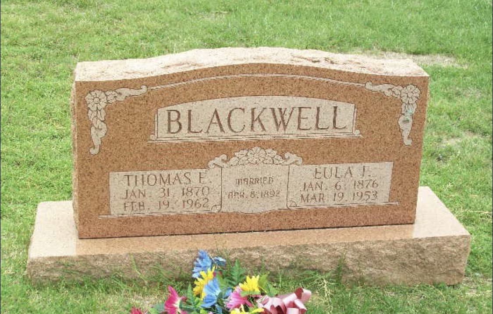

Photos & Memories
The Family Gallery
Every photograph is stored once and can appear in a person’s exhibit, a family collection, the timeline, and the gallery.



Newly Preserved
Photos & Memories
Every photograph is stored once and can appear in a person’s exhibit, a family collection, the timeline, and the gallery.

Newly Preserved